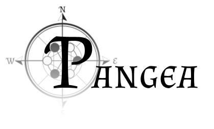

Pangea: juego de rol

Reglas del juego
El completo de las reglas aún está en proceso y es susceptible de cambiar. El manual completo puede encontrarse en el siguiente enlace .
El mundo
Se cree que la Tierra dentro de varios millones de años volverá a estar constituida por un único continente, Pangea. Tras una guerra horrible, la humanidad termina prácticamente extinta, llevándose además la mayor parte de los avances científicos y tecnológicos hasta el momento. Con el paso de los años, mutaciones aleatorias, combinadas con la radiación resultante de las bombas nucleares, nuevas especies inteligentes son creadas: lancanos, rembianos, hundianos, celestias, mimetantes, komolianos y aviantes, y junto a los humanos supervivientes, nuevas civilizaciones se alzan de las cenizas. Además la sensibilidad natural de los lancanos permitió el descubrimiento de la magia, energía natural que rodea a las criaturas vivas y que puede ser controlada por las mismas.
Partidas
Actualmente, un total de once jugadores han podido participar en la historia en tres campañas diferentes:
Indomable
Toda historia tiene un comienzo, y este ha sido uno fuerte. Año 1357, Nilon, una caravana se dispone a partir hacia Atlán, la capital de Kifrana, en un proyecto cultural con estudiantes de todas las edades. Los protagonistas de esta historia son Aishar, Raseri, John, Negrín y Sprinx. Todos ellos pensaban alcanzar la gran ciudad sin percances, pero se vieron envueltos en una encruzijada con una entidad milenaria que quiere dominar el mundo utilizando una máquina de control mental, el Indómine. Para ello, sin embargo, necesita una llave, y dicha llave está en las manos de Sprinx.
Los Mil Desafíos
En la ciudad de Atlán, un estafador llamado Finnegan y un cocinero llamado Sath son unidos por el destino para participar en un campeonato anual llamado "Los Mil Desafíso" junto a una pequeña criatura muda, Byron, que les apoyará durante su participación. No obstante, los juegos serán interrumpidos por el ataque de un coloso. Dichas criaturas son personas que tienen el don de cambiar de tamaño a placer. Tras investigar, descubrieron un complot para desestabilizar el país, pero para salvarlo no estuvieron solos, la Orden del Laberinto les ayudó a rescatar la ciudad.
Misterios del Laberinto
En una isla perdida en el basto océano se encunetra el Laberinto de Blentoir, un enorme complejo abandonado que se ha convertido en el lugar perfecto para chatarreros y bandidos. Perseguido por dos organizaciones, Anatar llega a la ciudad para conocer a Oblivscere, chatarrero y piloto de aeronaves, y a Josepe, un monje que ha sido contratado por la Orden del Laberinto para proteger a Anatar de la malvada entidad que yace en las entrañas de las instalaciones. Junto a la ayuda de Jack y Cheryl, conseguirán adentrarse en el núcleo de la enorme máquina para desvelar sus secretos.
Por otro lado, en 2023 darán comienzo otras tres partidas más: La Guerra del Indómine, La Caja de Gatos y Crónicas de Indonia.